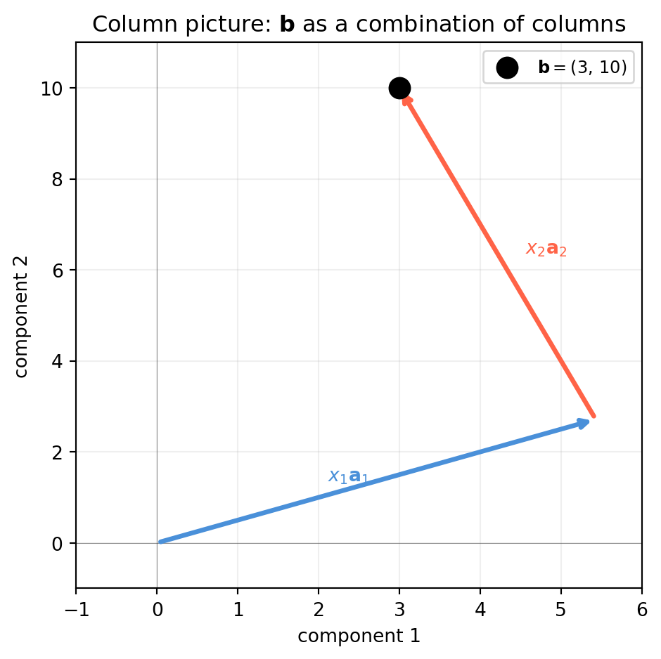
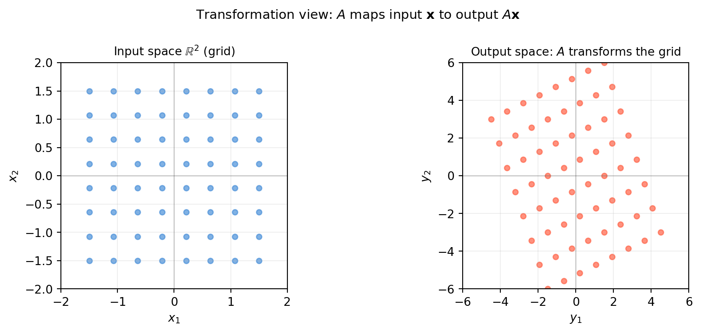
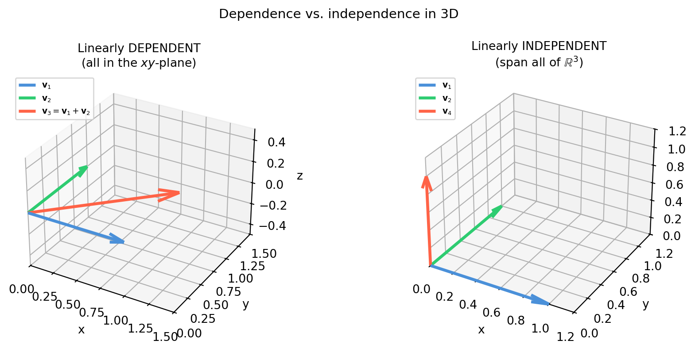
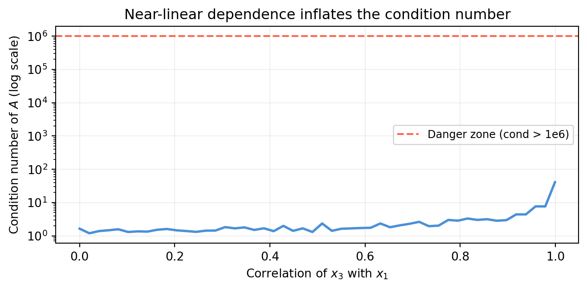
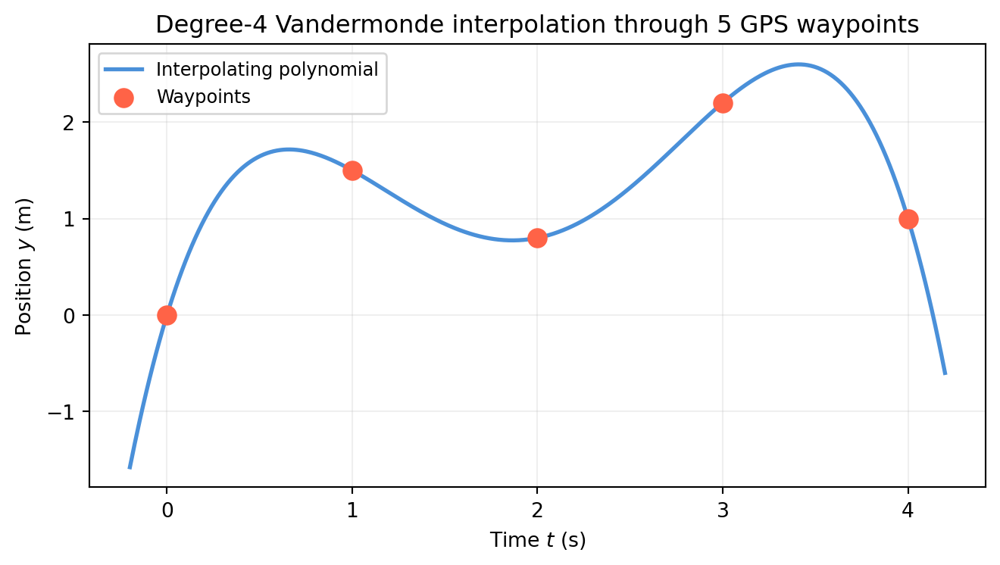
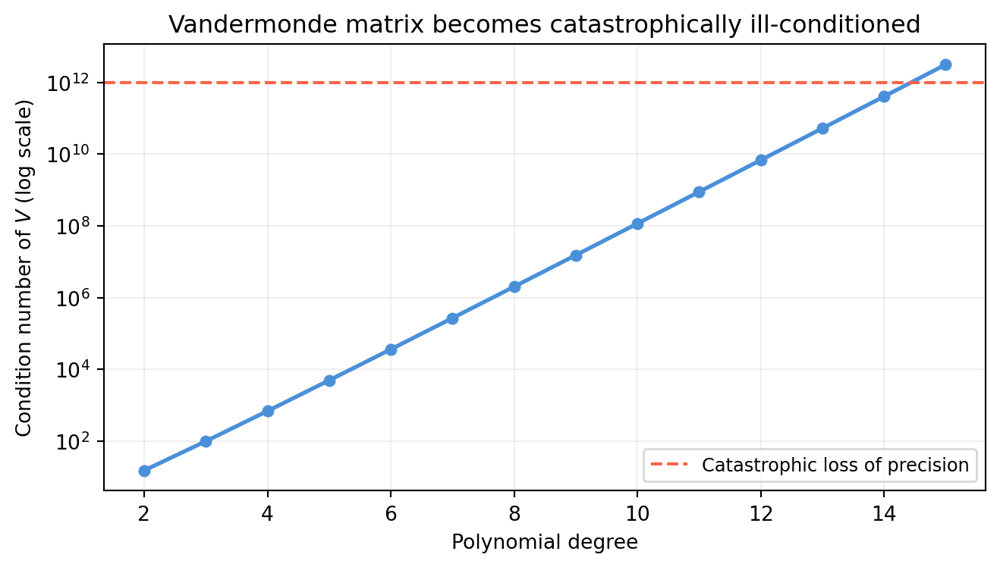
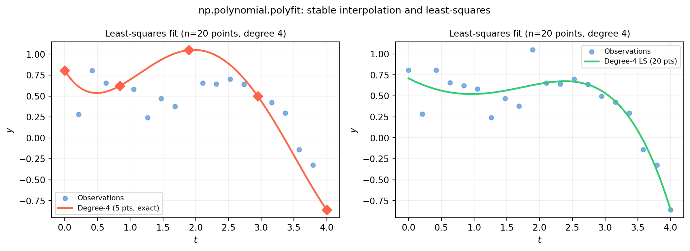
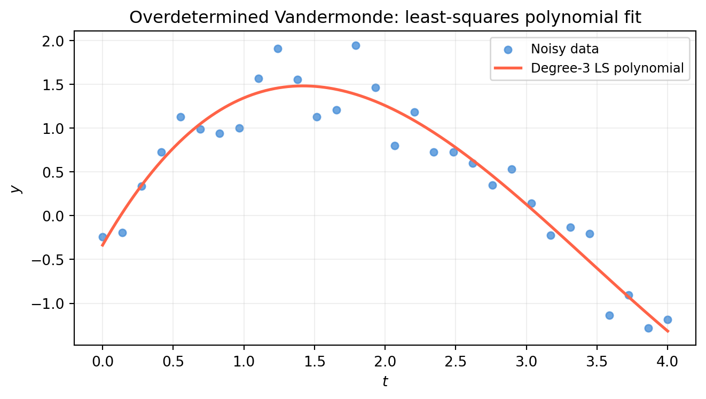

5Matrix Equations, Column Space, and Linear Independence
5.1 Three Views of \(A\mathbf{x}\)
The product \(A\mathbf{x}\) is not one thing — it is three things simultaneously, depending on which lens you look through. Each lens reveals something the others hide. Working roboticists flip between all three instinctively; by the end of this section you will too.
View
Reading
Use case
Row
Each row of \(A\) defines a hyperplane; solution is their intersection
Diagnosing consistency; counting constraints
Column
\(A\mathbf{x}\) is a linear combination of \(A\)’s columns
Deciding whether a solution exists; understanding rank
Transformation
\(A\) is a function that maps \(\mathbf{x} \in \mathbb{R}^n\) to \(A\mathbf{x} \in \mathbb{R}^m\)
In \(\mathbb{R}^2\) this is a line; in \(\mathbb{R}^3\) a plane; in \(\mathbb{R}^n\) a hyperplane. The solution \(\mathbf{x}^*\) (if one exists) must lie on all of them simultaneously.
“What scalars \(x_1, x_2\) let me combine the columns of \(A\) to reach \(\mathbf{b}\)?”
A solution exists if and only if\(\mathbf{b}\) lies in the span of \(A\)’s columns. This is the language of the column space (Section 5.2).
import numpy as npimport matplotlib.pyplot as pltA = np.array([[2., -1.], [1., 3.]])b = np.array([3., 10.])x_sol = np.linalg.solve(A, b) # x = (2.0, 1.0)fig, ax = plt.subplots(figsize=(5, 5))origin = np.zeros(2)a1 = A[:, 0] # first columna2 = A[:, 1] # second column# x1*a1 arrow from originax.annotate('', xy=x_sol[0]*a1, xytext=origin, arrowprops=dict(arrowstyle='->', color='#4a90d9', lw=2.5))# x2*a2 arrow from tip of x1*a1ax.annotate('', xy=x_sol[0]*a1 + x_sol[1]*a2, xytext=x_sol[0]*a1, arrowprops=dict(arrowstyle='->', color='tomato', lw=2.5))ax.scatter(*b, color='black', s=120, zorder=5, label=r'$\mathbf{b} = (3,\,10)$')ax.text(x_sol[0]*a1[0]*0.5-0.6, x_sol[0]*a1[1]*0.5,rf'$x_1\mathbf{{a}}_1$', color='#4a90d9', fontsize=10)ax.text(x_sol[0]*a1[0] + x_sol[1]*a2[0]*0.4+0.1, x_sol[0]*a1[1] + x_sol[1]*a2[1]*0.5,rf'$x_2\mathbf{{a}}_2$', color='tomato', fontsize=10)ax.set_xlim(-1, 6); ax.set_ylim(-1, 11)ax.axhline(0, color='#333333', lw=0.4, alpha=0.5)ax.axvline(0, color='#333333', lw=0.4, alpha=0.5)ax.set_xlabel('component 1'); ax.set_ylabel('component 2')ax.set_title('Column picture: $\\mathbf{b}$ as a combination of columns')ax.legend(fontsize=9); ax.grid(True, alpha=0.2)plt.tight_layout()plt.show()

5.1.3 View 3 — Transformation Picture: \(A\) as a Function
Think of \(A\) as a function\(f(\mathbf{x}) = A\mathbf{x}\) that maps every point in the input space \(\mathbb{R}^n\) to a point in the output space \(\mathbb{R}^m\).
As \(\mathbf{x}\) ranges over all of \(\mathbb{R}^n\), \(A\mathbf{x}\) sweeps out a subspace of \(\mathbb{R}^m\) — the column space of \(A\).
The transformation picture makes visible what the matrix does to geometry: it stretches, rotates, and possibly collapses dimensions.
import numpy as npimport matplotlib.pyplot as pltA = np.array([[2., -1.], [1., 3.]])# Build a grid in input spaces = np.linspace(-1.5, 1.5, 8)grid_pts = np.array([[u, v] for u in s for v in s])# Map every grid point through Amapped = (A @ grid_pts.T).T # shape (64, 2)fig, axes = plt.subplots(1, 2, figsize=(10, 4))ax = axes[0]ax.scatter(grid_pts[:, 0], grid_pts[:, 1], color='#4a90d9', s=20, alpha=0.7)ax.set_title('Input space $\\mathbb{R}^2$ (grid)', fontsize=10)ax.set_xlim(-2, 2); ax.set_ylim(-2, 2)ax.set_aspect('equal')ax.axhline(0, color='#333333', lw=0.4, alpha=0.5)ax.axvline(0, color='#333333', lw=0.4, alpha=0.5)ax.grid(True, alpha=0.2)ax.set_xlabel('$x_1$'); ax.set_ylabel('$x_2$')ax = axes[1]ax.scatter(mapped[:, 0], mapped[:, 1], color='tomato', s=20, alpha=0.7)ax.set_title('Output space: $A$ transforms the grid', fontsize=10)ax.set_xlim(-6, 6); ax.set_ylim(-6, 6)ax.set_aspect('equal')ax.axhline(0, color='#333333', lw=0.4, alpha=0.5)ax.axvline(0, color='#333333', lw=0.4, alpha=0.5)ax.grid(True, alpha=0.2)ax.set_xlabel('$y_1$'); ax.set_ylabel('$y_2$')fig.suptitle(r'Transformation view: $A$ maps input $\mathbf{x}$ to output $A\mathbf{x}$', fontsize=11)fig.tight_layout()plt.show()

The output cloud is a stretched and rotated version of the input grid. When \(A\) is square and full-rank, no dimension is lost — the transformation is invertible. When \(A\) is rank-deficient, the output is squeezed into a lower-dimensional subspace and information is destroyed.
Row picture — use it when checking consistency: are my sensor readings contradictory? Do more constraints help or hurt?
Column picture — use it when asking existence: is this target \(\mathbf{b}\) reachable? What is the smallest number of independent columns I need?
Transformation picture — use it when thinking about geometry: does this matrix collapse a dimension? Does it preserve distances? Does it have a fixed direction?
These three perspectives will reappear in every chapter of this book. When a concept feels confusing, translate it into whichever view makes it obvious.
5.2 Column Space and Null Space
The column view from Section 5.1 raises a precise question: which vectors \(\mathbf{b}\) can \(A\) actually reach? The answer is the column space. And the complementary question — which inputs \(\mathbf{x}\) get mapped to zero? — gives the null space. Together they tell you everything about the solvability and uniqueness of \(A\mathbf{x} = \mathbf{b}\).
5.2.1 The Column Space \(\mathcal{C}(A)\)
\[\mathcal{C}(A) = \{ A\mathbf{x} \mid \mathbf{x} \in \mathbb{R}^n \}
= \text{span of the columns of } A\]
\(\mathcal{C}(A)\) lives in \(\mathbb{R}^m\) (the output space). Its dimension is the rank of \(A\): the number of independent columns.
Key fact.\(A\mathbf{x} = \mathbf{b}\) is consistent (has at least one solution) if and only if \(\mathbf{b} \in \mathcal{C}(A)\).
import numpy as np# 3×2 matrix — columns span a plane in R^3A = np.array([[1., 0.], [1., 1.], [0., 1.]])rank = np.linalg.matrix_rank(A)print(f"A shape: {A.shape} (maps R^2 → R^3)")print(f"rank(A) = {rank} → column space is a {rank}-D plane in R^3")# b1 is IN the column space (b1 = 0.5*a1 + 1.5*a2)b_in =0.5*A[:,0] +1.5*A[:,1]# b2 is NOT in the column spaceb_out = np.array([1., 0., 0.])for label, b in [("b_in", b_in), ("b_out", b_out)]: x, res, _, _ = np.linalg.lstsq(A, b, rcond=None) residual = np.linalg.norm(A @ x - b) in_cs ="YES"if residual <1e-10else"NO"print(f"\n{label} = {b}")print(f" residual = {residual:.2e} → in column space? {in_cs}")
A shape: (3, 2) (maps R^2 → R^3)
rank(A) = 2 → column space is a 2-D plane in R^3
b_in = [0.5 2. 1.5]
residual = 8.08e-16 → in column space? YES
b_out = [1. 0. 0.]
residual = 5.77e-01 → in column space? NO
5.2.2 Visualising the Column Space
import numpy as npimport matplotlib.pyplot as pltA = np.array([[1., 0.], [1., 1.], [0., 1.]])# Parametric sweep: A @ [s, t] for s,t in [-2,2]s_vals = np.linspace(-2, 2, 12)t_vals = np.linspace(-2, 2, 12)S, T = np.meshgrid(s_vals, t_vals)pts = A @ np.vstack([S.ravel(), T.ravel()]) # shape (3, n)fig = plt.figure(figsize=(6, 5))ax = fig.add_subplot(111, projection='3d')ax.scatter(pts[0], pts[1], pts[2], color='#4a90d9', s=8, alpha=0.5, label='Column space')# Mark two specific b vectorsb_in =0.5*A[:,0] +1.5*A[:,1]b_out = np.array([1., 0., 0.])ax.scatter(*b_in, color='#2ecc71', s=80, zorder=5, label=r'$\mathbf{b}_{in}$(in $\mathcal{C}(A)$)')ax.scatter(*b_out, color='tomato', s=80, zorder=5, marker='x', linewidths=2, label=r'$\mathbf{b}_{out}$(not in $\mathcal{C}(A)$)')ax.set_xlabel('$y_1$'); ax.set_ylabel('$y_2$'); ax.set_zlabel('$y_3$')ax.set_title('Column space of $A$: a plane in $\\mathbb{R}^3$', fontsize=10)ax.legend(fontsize=8, loc='upper left')plt.tight_layout()plt.show()
\(\mathcal{N}(A)\) lives in \(\mathbb{R}^n\) (the input space). It is always a subspace (it contains \(\mathbf{0}\) and is closed under addition and scaling).
Rank-nullity theorem. For \(A \in \mathbb{R}^{m \times n}\):
This is one of the most important equalities in linear algebra — it says that every column that is “used up” by the rank leaves one fewer free direction in the null space.
import numpy as np# Rank-deficient matrix: col3 = col1 + col2A = np.array([[1., 2., 3.], [0., 1., 1.], [2., 1., 3.]])rank = np.linalg.matrix_rank(A)nullity = A.shape[1] - rankprint(f"rank(A) = {rank}, nullity = {nullity}")print(f"Rank-nullity check: {rank} + {nullity} = {rank+nullity} = n = {A.shape[1]}")# Null space via SVD: right singular vectors for near-zero singular valuesU, s, Vt = np.linalg.svd(A)print(f"\nSingular values: {s.round(6)}")# Last row(s) of Vt correspond to zero (or near-zero) singular valuesnull_vecs = Vt[rank:] # shape (nullity, n)print(f"Null space basis:\n{null_vecs.round(6)}")# Verify: A @ null_vec should be ~0for v in null_vecs:print(f"\nA @ null_vec = {(A @ v).round(10)} (should be zero)")
rank(A) = 2, nullity = 1
Rank-nullity check: 2 + 1 = 3 = n = 3
Singular values: [5.341137 1.213363 0. ]
Null space basis:
[[-0.57735 -0.57735 0.57735]]
A @ null_vec = [-0. -0. -0.] (should be zero)
5.2.4 Null Space and the General Solution
When \(A\mathbf{x} = \mathbf{b}\) has any solution \(\mathbf{x}_p\) (a particular solution), the complete solution set is:
Every matrix \(A \in \mathbb{R}^{m \times n}\) has four associated subspaces that together give a complete picture of the linear map:
Subspace
Lives in
Dimension
Column space \(\mathcal{C}(A)\)
\(\mathbb{R}^m\)
rank
Null space \(\mathcal{N}(A)\)
\(\mathbb{R}^n\)
$n - $ rank
Row space \(\mathcal{C}(A^T)\)
\(\mathbb{R}^n\)
rank
Left null space \(\mathcal{N}(A^T)\)
\(\mathbb{R}^m\)
$m - $ rank
A deep theorem (Chapter 14) states that the row space and the null space are orthogonal complements in \(\mathbb{R}^n\), and similarly for the column space and left null space in \(\mathbb{R}^m\). For now, the take-away is that rank controls all four dimensions simultaneously.
import numpy as npA = np.array([[1., 2., 3.], [0., 1., 1.], [2., 1., 3.]])m, n = A.shaper = np.linalg.matrix_rank(A)print(f"A is {m}×{n}, rank = {r}")print(f" C(A): dim = {r} (in R^{m})")print(f" N(A): dim = {n-r} (in R^{n})")print(f" C(A^T): dim = {r} (in R^{n})")print(f" N(A^T): dim = {m-r} (in R^{m})")print(f"\nDimension check: {r} + {n-r} = {n} = n ✓")print(f" {r} + {m-r} = {m} = m ✓")
A is 3×3, rank = 2
C(A): dim = 2 (in R^3)
N(A): dim = 1 (in R^3)
C(A^T): dim = 2 (in R^3)
N(A^T): dim = 1 (in R^3)
Dimension check: 2 + 1 = 3 = n ✓
2 + 1 = 3 = m ✓
5.3 Block Matrices
Real systems — robot state estimators, neural network weight tensors, sparse SLAM factor graphs — are too large to write as a single slab of numbers. Block notation partitions a matrix into named sub-matrices, letting you manipulate structure without drowning in indices. More importantly, certain block patterns admit efficient solution strategies that the full-matrix view would not reveal.
5.3.1 Block Notation and Multiplication
Partition \(A \in \mathbb{R}^{(p+q)\times(r+s)}\) into four blocks:
where \(A_{11} \in \mathbb{R}^{p\times r}\), \(A_{12} \in \mathbb{R}^{p\times s}\), and so on. Block multiplication follows the same rule as scalar multiplication — treating each block as an “entry” — as long as the inner dimensions agree:
The matrix \(S = D - CA^{-1}B\) is the Schur complement of \(A\).
Why it matters. The Schur complement encodes the effective system after eliminating one block of unknowns. It appears in:
Kalman filter — the innovation covariance\(S = H P H^T + R\) is the Schur complement of the joint covariance.
Graph SLAM — marginalising landmark variables from the factor graph.
Completing the square for Gaussian conditionals in Bayesian inference.
import numpy as np# Block system: 4×4 matrix, two 2×2 blocks eachA = np.array([[4., 1.], [1., 3.]]) # top-left 2×2B = np.array([[1., 0.], [0., 1.]]) # top-rightC = np.array([[2., 1.], [0., 1.]]) # bottom-leftD = np.array([[5., 2.], [1., 4.]]) # bottom-rightp = np.array([3., 2.])q = np.array([7., 1.])# --- Schur complement solve ---S = D - C @ np.linalg.solve(A, B) # S = D - C A^{-1} Brhs = q - C @ np.linalg.solve(A, p) # q - C A^{-1} py = np.linalg.solve(S, rhs)x = np.linalg.solve(A, p - B @ y)# --- Full 4×4 solve ---M_full = np.block([[A, B], [C, D]])rhs_full = np.concatenate([p, q])xy_full = np.linalg.solve(M_full, rhs_full)print("Schur complement solve:")print(f" x = {x.round(6)}, y = {y.round(6)}")print(f"\nFull 4×4 solve: {xy_full.round(6)}")print(f"\nMatch: {np.allclose(np.concatenate([x,y]), xy_full)}")print(f"\nSchur complement S = D - C A^{{-1}} B:")print(S.round(6))
Schur complement solve:
x = [0.275 0.65 ], y = [ 1.25 -0.225]
Full 4×4 solve: [ 0.275 0.65 1.25 -0.225]
Match: True
Schur complement S = D - C A^{-1} B:
[[4.545455 1.818182]
[1.090909 3.636364]]
5.3.4 Schur Complement in a Kalman Filter Update
A 2-D robot position estimate has prior covariance \(P\). A sensor provides a noisy position measurement with noise covariance \(R\). The Kalman filter update can be expressed entirely in terms of the Schur complement.
import numpy as np# Prior state covariance (2×2, position x and y)P = np.array([[0.5, 0.1], [0.1, 0.3]])# Measurement matrix (direct position observation)H = np.eye(2)# Measurement noise covarianceR = np.array([[0.2, 0.0], [0.0, 0.2]])# Prior state estimate and measurementx_prior = np.array([3.0, 4.0])z = np.array([3.1, 3.9]) # noisy observation# Innovation covariance (this IS the Schur complement of the joint)S_innov = H @ P @ H.T + R # 2×2# Kalman gainK = P @ H.T @ np.linalg.inv(S_innov)# Posteriorx_post = x_prior + K @ (z - H @ x_prior)P_post = (np.eye(2) - K @ H) @ Pprint("Innovation covariance S (Schur complement):")print(S_innov)print(f"\nKalman gain K:\n{K.round(4)}")print(f"\nPrior estimate: {x_prior}")print(f"Measurement: {z}")print(f"Posterior estimate: {x_post.round(4)}")print(f"\nPosterior covariance P_post:\n{P_post.round(4)}")print("(smaller diagonal = more certain after fusing measurement)")
Innovation covariance S (Schur complement):
[[0.7 0.1]
[0.1 0.5]]
Kalman gain K:
[[0.7059 0.0588]
[0.0588 0.5882]]
Prior estimate: [3. 4.]
Measurement: [3.1 3.9]
Posterior estimate: [3.0647 3.9471]
Posterior covariance P_post:
[[0.1412 0.0118]
[0.0118 0.1176]]
(smaller diagonal = more certain after fusing measurement)
The posterior covariance is smaller than the prior — the measurement reduced uncertainty. The Schur complement \(S\) is what you solve through to get the Kalman gain: it quantifies how surprising a measurement would be.
5.3.5 Why Block Structure Saves Computation
For an \(n \times n\) matrix partitioned into blocks of size \(k \times k\) (\(n = mk\)), a naive dense solve costs \(O(n^3)\). Exploiting block structure — especially sparsity — can reduce this to \(O(mk^3)\) or better.
In SLAM with \(p\) pose variables and \(\ell\) landmark variables, the factor graph is sparse: each landmark is observed by only a few poses. Marginalising the landmarks (via Schur complement) leaves a dense\(p \times p\) system but a much smaller one. This is the “Schur complement trick” used in every major SLAM solver (g2o, GTSAM, Ceres).
5.4 Linear Independence, Basis, and Dimension
The column space tells you what a matrix can reach. Linear independence tells you how efficiently it does so — whether any column is redundant, whether you could drop it without losing reachability. Getting this right is the difference between a model that has a unique solution and one that has infinitely many.
5.4.1 Linear Independence
Vectors \(\mathbf{v}_1, \ldots, \mathbf{v}_k \in \mathbb{R}^n\) are linearly independent if the only scalars satisfying
If a non-trivial combination exists (some \(c_i \neq 0\)), then at least one vector is a linear combination of the others — it is redundant.
Practical test. Stack \(\mathbf{v}_1, \ldots, \mathbf{v}_k\) as columns of a matrix \(V\) and compute \(\text{rank}(V)\). If \(\text{rank}(V) = k\), the vectors are independent. If \(\text{rank}(V) < k\), some are redundant.
import numpy as npimport matplotlib.pyplot as pltfig, axes = plt.subplots(1, 2, figsize=(10, 4), subplot_kw={'projection': '3d'})colors = ['#4a90d9', '#2ecc71', 'tomato']def draw_arrow(ax, vec, color, label): ax.quiver(0, 0, 0, vec[0], vec[1], vec[2], color=color, arrow_length_ratio=0.15, lw=2.5, label=label)# Left: dependent (v1, v2, v3 all in the xy-plane)ax = axes[0]vecs_dep = [np.array([1.,0.,0.]), np.array([0.,1.,0.]), np.array([1.,1.,0.])]labels_dep = [r'$\mathbf{v}_1$', r'$\mathbf{v}_2$', r'$\mathbf{v}_3=\mathbf{v}_1+\mathbf{v}_2$']for v, c, l inzip(vecs_dep, colors, labels_dep): draw_arrow(ax, v, c, l)ax.set_xlim(0,1.5); ax.set_ylim(0,1.5); ax.set_zlim(-0.5, 0.5)ax.set_title('Linearly DEPENDENT\n(all in the $xy$-plane)', fontsize=10)ax.legend(fontsize=7, loc='upper left')ax.set_xlabel('x'); ax.set_ylabel('y'); ax.set_zlabel('z')# Right: independent (v1, v2, v4 span R^3)ax = axes[1]vecs_ind = [np.array([1.,0.,0.]), np.array([0.,1.,0.]), np.array([0.,0.,1.])]labels_ind = [r'$\mathbf{v}_1$', r'$\mathbf{v}_2$', r'$\mathbf{v}_4$']for v, c, l inzip(vecs_ind, colors, labels_ind): draw_arrow(ax, v, c, l)ax.set_xlim(0,1.2); ax.set_ylim(0,1.2); ax.set_zlim(0, 1.2)ax.set_title('Linearly INDEPENDENT\n(span all of $\\mathbb{R}^3$)', fontsize=10)ax.legend(fontsize=7, loc='upper left')ax.set_xlabel('x'); ax.set_ylabel('y'); ax.set_zlabel('z')fig.suptitle('Dependence vs. independence in 3D', fontsize=11)fig.tight_layout()plt.show()

5.4.3 Basis and Dimension
A basis for a subspace \(V\) is a set of vectors that is:
Independent — no vector is redundant.
Spanning — every vector in \(V\) can be written as a combination of the basis.
Dimension is the number of vectors in any basis. Every basis of the same subspace has exactly the same number of vectors.
The standard basis for \(\mathbb{R}^n\) is \(\{\mathbf{e}_1, \ldots, \mathbf{e}_n\}\). But there are infinitely many other valid bases — what matters is the count.
import numpy as np# Plane in R^3 defined by x + y + z = 0# Two independent vectors on the planeb1 = np.array([ 1., -1., 0.])b2 = np.array([ 1., 0., -1.])# Check they span the plane (rank 2) and lie on itB = np.column_stack([b1, b2])print(f"Plane basis rank: {np.linalg.matrix_rank(B)} (2 vectors → 2D subspace)")print(f"b1 on plane? sum={b1.sum():.1f} ({'yes'ifabs(b1.sum())<1e-10else'no'})")print(f"b2 on plane? sum={b2.sum():.1f} ({'yes'ifabs(b2.sum())<1e-10else'no'})")# Express a third plane-point as a combination of b1, b2target = np.array([2., -1., -1.])# Solve B @ c = targetc, res, _, _ = np.linalg.lstsq(B, target, rcond=None)residual = np.linalg.norm(B @ c - target)print(f"\ntarget = {target} on plane? sum={target.sum():.1f}")print(f"coords in basis: c = {c.round(4)}")print(f"reconstruction error: {residual:.2e} (zero → in the plane)")
Plane basis rank: 2 (2 vectors → 2D subspace)
b1 on plane? sum=0.0 (yes)
b2 on plane? sum=0.0 (yes)
target = [ 2. -1. -1.] on plane? sum=0.0
coords in basis: c = [1. 1.]
reconstruction error: 3.14e-16 (zero → in the plane)
5.4.4 Rank = Dimension of the Column Space
The rank of \(A\) is exactly the dimension of \(\mathcal{C}(A)\). Adding a column that is already in the span of the others does not increase the rank.
This has a direct machine-learning consequence: if two features in a design matrix are linearly dependent, \(A^TA\) becomes singular and least-squares has no unique solution.
import numpy as nprng = np.random.default_rng(0)n =50# data points# Three genuinely independent featuresx1 = rng.normal(0, 1, n)x2 = rng.normal(0, 1, n)x3 = rng.normal(0, 1, n)# Fourth feature is a linear combination of x1 and x2 (perfectly redundant)x4_redundant =2*x1 - x2A_ind = np.column_stack([x1, x2, x3])A_red = np.column_stack([x1, x2, x3, x4_redundant])print(f"rank(A with 3 independent features): {np.linalg.matrix_rank(A_ind)}")print(f"rank(A with 4th redundant feature): {np.linalg.matrix_rank(A_red)}")print("(rank did not increase — x4 adds no new information)")print(f"\ncond(A^T A) independent: {np.linalg.cond(A_ind.T @ A_ind):.1f}")print(f"cond(A^T A) with x4: {np.linalg.cond(A_red.T @ A_red):.2e}")print("(near-infinite condition → singular, least-squares breaks)")
rank(A with 3 independent features): 3
rank(A with 4th redundant feature): 3
(rank did not increase — x4 adds no new information)
cond(A^T A) independent: 1.5
cond(A^T A) with x4: 4.95e+16
(near-infinite condition → singular, least-squares breaks)
5.4.5 Detecting Independence in Practice
The rank diagnostic works, but what do you do when columns are nearly dependent (due to floating-point noise)? Use the singular values of \(A\). A singular value close to zero signals a nearly-dependent column — the ratio of largest to smallest singular value is the condition number.
import numpy as npimport matplotlib.pyplot as pltrng = np.random.default_rng(1)n =30x1 = rng.normal(0, 1, n)x2 = rng.normal(0, 1, n)fig, ax = plt.subplots(figsize=(7, 3.5))correlations = np.linspace(0.0, 0.999, 50)cond_numbers = []for rho in correlations:# x3 = rho*x1 + sqrt(1-rho^2)*noise (partial correlation with x1) x3 = rho * x1 + np.sqrt(max(0, 1- rho**2)) * rng.normal(0, 1, n) A = np.column_stack([x1, x2, x3]) cond_numbers.append(np.linalg.cond(A))ax.semilogy(correlations, cond_numbers, color='#4a90d9', lw=2)ax.axhline(1e6, color='tomato', lw=1.5, ls='--', label='Danger zone (cond > 1e6)')ax.set_xlabel('Correlation of $x_3$ with $x_1$')ax.set_ylabel('Condition number of $A$ (log scale)')ax.set_title('Near-linear dependence inflates the condition number')ax.legend(fontsize=9); ax.grid(True, alpha=0.2)plt.tight_layout()plt.show()

As two features become perfectly correlated, the condition number diverges — a numerical alarm bell for collinearity. Section 5.5 addresses what to do about it.
5.5 Feature Collinearity and Rank Deficiency
Section 5.4 ended with a warning: near-linear dependence between features inflates the condition number and destabilizes the solution. This section makes that warning concrete with numbers, introduces the standard diagnostic (Variance Inflation Factor), and shows three remedies.
5.5.1 Why Collinearity Is Dangerous
When two features are highly correlated, the columns of the design matrix \(A\) are nearly linearly dependent. The matrix \(A^TA\) is nearly singular, so its inverse amplifies any noise in \(\mathbf{b}\) into enormous swings in the coefficient estimate \(\hat{\mathbf{x}} = (A^TA)^{-1}A^T\mathbf{b}\).
Perfect collinearity — a canonical example:
import numpy as nprng = np.random.default_rng(42)n =100height_cm = rng.normal(170, 10, n)height_in = height_cm /2.54# exact linear function of height_cm!weight_kg =0.5* height_cm -40+ rng.normal(0, 5, n)y = weight_kg + rng.normal(0, 2, n) # noisy targetA = np.column_stack([height_cm, height_in, np.ones(n)])r = np.linalg.matrix_rank(A)c = np.linalg.cond(A)print(f"Features: height_cm, height_in (= height_cm / 2.54), intercept")print(f"rank(A) = {r} (should be 3, is 2 → perfect collinearity)")print(f"cond(A) = {c:.2e} (astronomically large)")# lstsq won't crash but coefficients are meaninglessx_ls, _, _, sv = np.linalg.lstsq(A, y, rcond=None)print(f"\nSingular values: {sv.round(4)}")print(f"Coefficients: {x_ls.round(4)}")print("(the two height coefficients are arbitrary and can be any pair that sums correctly)")
Features: height_cm, height_in (= height_cm / 2.54), intercept
rank(A) = 2 (should be 3, is 2 → perfect collinearity)
cond(A) = 3.79e+16 (astronomically large)
Singular values: [1.8235231e+03 4.5540000e-01 0.0000000e+00]
Coefficients: [ 0.4829 0.1901 -49.9706]
(the two height coefficients are arbitrary and can be any pair that sums correctly)
The two height features contain identical information. Any partition of the total height effect between them satisfies the equations equally well — there is no unique answer.
5.5.2 Near Collinearity: Coefficients Blow Up
Perfect collinearity never happens in real data (floating-point noise breaks it), but near-collinearity is common. As correlation approaches 1, the coefficients become increasingly unstable.
Near \(\rho = 1\) the estimates blow up to \(\pm\infty\) while the sum\(\hat{x}_1 + \hat{x}_2\) stays near \(5\) — the total effect is identifiable but the individual contributions are not.
5.5.3 Variance Inflation Factor (VIF)
VIF quantifies how much collinearity inflates the variance of each coefficient. For feature \(j\):
\[\text{VIF}_j = \frac{1}{1 - R_j^2}\]
where \(R_j^2\) is the coefficient of determination when feature \(j\) is regressed on all other features. Perfectly independent features give \(\text{VIF} = 1\). A common rule of thumb: VIF > 10 is a red flag.
import numpy as npdef vif(A):""" Compute VIF for each column of design matrix A (no intercept column assumed). Returns array of VIF values. """ n, p = A.shape vifs = []for j inrange(p): y_j = A[:, j] X_j = np.delete(A, j, axis=1) # all other columns# R^2 = 1 - SS_res / SS_tot beta, _, _, _ = np.linalg.lstsq( np.column_stack([X_j, np.ones(n)]), y_j, rcond=None) y_hat = np.column_stack([X_j, np.ones(n)]) @ beta ss_res = np.sum((y_j - y_hat)**2) ss_tot = np.sum((y_j - y_j.mean())**2) r2 =1- ss_res / ss_tot if ss_tot >0else0.0 vifs.append(1.0/ (1.0- r2) if r2 <1.0else np.inf)return np.array(vifs)rng = np.random.default_rng(7)n =80x1 = rng.normal(0, 1, n)x2 = rng.normal(0, 1, n)x3_low =0.3* x1 +0.7* rng.normal(0, 1, n) # mild correlationx3_high =0.95* x1 +0.05* rng.normal(0, 1, n) # severe correlationprint("=== Low collinearity (rho ~ 0.3) ===")A_low = np.column_stack([x1, x2, x3_low])print(f"VIF: {vif(A_low).round(2)}")print("\n=== High collinearity (rho ~ 0.95) ===")A_high = np.column_stack([x1, x2, x3_high])print(f"VIF: {vif(A_high).round(2)}")print("(VIF > 10 for x1 and x3 → collinearity problem)")
The simplest fix: remove one of the correlated features, or replace the pair with their average (or first principal component). This works when you have domain knowledge about which combination is meaningful.
This makes the problem well-conditioned regardless of collinearity. The cost: a small bias in the coefficients. Chapter 19 (PCA) shows how to choose \(\lambda\).
import numpy as nprng = np.random.default_rng(0)n =50x1 = rng.normal(0, 1, n)x2 =0.98* x1 +0.02* rng.normal(0, 1, n) # near-collinearA = np.column_stack([x1, x2])y =2.0*x1 +3.0*x2 + rng.normal(0, 0.5, n)# OLS (unstable)x_ols, _, _, _ = np.linalg.lstsq(A, y, rcond=None)# Ridge with several lambda valueslambdas = [0.0, 0.1, 1.0, 10.0]print(f"{'lambda':>8}{'coef_1':>10}{'coef_2':>10}{'cond(A^TA+lI)':>16}")print("-"*52)for lam in lambdas: M = A.T @ A + lam * np.eye(2) x_r = np.linalg.solve(M, A.T @ y) c = np.linalg.cond(M)print(f"{lam:>8.1f}{x_r[0]:>10.4f}{x_r[1]:>10.4f}{c:>16.2f}")print("\nTrue coefficients: 2.0, 3.0")print("(lambda=0 is OLS; increasing lambda stabilizes estimates but adds bias)")
PCA rotates the feature space so that the new axes (principal components) are uncorrelated. Regressing on the top \(k\) principal components eliminates collinearity by construction. Chapter 19 covers this in full.
Summary of collinearity diagnostics:
Symptom
Diagnostic
Threshold
Huge coefficient swings across samples
VIF
> 10
Near-zero singular value
\(\sigma_{\min}(A)\)
context-dependent
Inflated coefficient variance
Condition number of \(A^TA\)
> \(10^6\)
5.6 Computing with Matrices
The rest of this book writes \(A\mathbf{x}\) constantly. Before that notation becomes mechanical, it is worth knowing how NumPy actually executes it — because the difference between a naïve implementation and a library call can be 100× in speed and an order of magnitude in numerical accuracy.
5.6.1 Use @, Not * or Loops
The @ operator (PEP 465) calls BLAS dgemm / dgemv under the hood — highly optimized Fortran/C routines that use CPU SIMD and cache tiling. The explicit * operator does element-wise multiplication, which is rarely what you want for linear algebra.
A @ x = [ 5. 11.] ← matrix-vector product (correct)
A * x =
[[1. 4.]
[3. 8.]] ← element-wise broadcast (rarely intended)
5.6.2 Broadcasting: Batch Operations Without Loops
Broadcasting lets NumPy apply an operation across all rows or columns simultaneously. The rule: dimensions are compared right-to-left; a dimension of size 1 is broadcast to match the other.
X shape: (100, 4), bias shape: (4,)
X_biased shape: (100, 4)
First row after bias: [ 1.1257 -0.6321 0.8404 0.1049]
Manual check: [ 1.1257 -0.6321 0.8404 0.1049]
Batch matrix-vector products:
import numpy as npimport timerng = np.random.default_rng(1)A = rng.normal(0, 1, (3, 3))xs = rng.normal(0, 1, (10_000, 3)) # 10,000 input vectors# Loop versiont0 = time.perf_counter()results_loop = np.array([A @ x for x in xs])t_loop = time.perf_counter() - t0# Vectorized: xs.T is (3, 10000); A @ xs.T is (3, 10000); transpose backt0 = time.perf_counter()results_vec = (A @ xs.T).Tt_vec = time.perf_counter() - t0print(f"Loop: {t_loop*1000:.2f} ms")print(f"Vectorized: {t_vec*1000:.2f} ms")print(f"Speedup: {t_loop/t_vec:.1f}x")print(f"Results match: {np.allclose(results_loop, results_vec)}")
Loop: 7.88 ms
Vectorized: 0.07 ms
Speedup: 110.6x
Results match: True
5.6.3 Avoid Explicit Matrix Inverses
Never computenp.linalg.inv(A) @ b when you want to solve \(A\mathbf{x}=\mathbf{b}\). Use np.linalg.solve(A, b) instead. Both give the same mathematical answer, but solve uses LU decomposition without explicitly forming \(A^{-1}\) — it is faster and more numerically stable.
The difference matters most for ill-conditioned matrices:
import numpy as np# Build a Hilbert matrix — famously ill-conditioneddef hilbert(n):return np.array([[1/(i+j+1) for j inrange(n)] for i inrange(n)])n =10H = hilbert(n)x_true = np.ones(n)b = H @ x_true# Method 1: via explicit inversex_inv = np.linalg.inv(H) @ b# Method 2: via solve (LU decomposition internally)x_solve = np.linalg.solve(H, b)err_inv = np.linalg.norm(x_inv - x_true)err_solve = np.linalg.norm(x_solve - x_true)print(f"Hilbert matrix size: {n}×{n}")print(f"Condition number: {np.linalg.cond(H):.2e}")print(f"\n||x_inv - x_true|| = {err_inv:.2e}")print(f"||x_solve - x_true|| = {err_solve:.2e}")print(f"\nsolve is {err_inv/err_solve:.0f}x more accurate than inv @ b")
Hilbert matrix size: 10×10
Condition number: 1.60e+13
||x_inv - x_true|| = 9.01e-03
||x_solve - x_true|| = 2.74e-04
solve is 33x more accurate than inv @ b
The explicit inverse accumulates rounding errors across all \(n\) rows. solve does one targeted LU factorization and avoids that accumulation.
5.6.4np.einsum: Named Index Notation
np.einsum expresses arbitrary contractions using Einstein summation notation. It is especially useful for operations that would require awkward transposes or intermediate arrays.
import numpy as nprng = np.random.default_rng(2)n =5# batch sized =3# dimension# Batch of column vectors: shape (n, d)X = rng.normal(0, 1, (n, d))# Batch outer product: result[k] = X[k] @ X[k].T, shape (n, d, d)# Using einsum: 'ki,kj->kij' means sum over nothing, outer product per kouter_einsum = np.einsum('ki,kj->kij', X, X)# Manual loop for verificationouter_loop = np.array([np.outer(X[k], X[k]) for k inrange(n)])print(f"Batch outer product shape: {outer_einsum.shape}")print(f"Matches loop: {np.allclose(outer_einsum, outer_loop)}")# Mean outer product = covariance matrix (zero-mean assumed)cov_einsum = outer_einsum.mean(axis=0)cov_numpy = (X.T @ X) / nprint(f"\nMean outer product (einsum): \n{cov_einsum.round(4)}")print(f"(X.T @ X) / n: \n{cov_numpy.round(4)}")print(f"Match: {np.allclose(cov_einsum, cov_numpy)}")
NumPy uses C-order (row-major) by default: elements of the same row are stored contiguously in memory. This means row-slicing is cache-friendly and column-slicing is not.
import numpy as npimport timeA = np.ascontiguousarray(np.random.randn(2000, 2000)) # C-order (row-major)A_F = np.asfortranarray(A) # Fortran-order (column-major)# Summing each row is cache-friendly for C-ordert0 = time.perf_counter()_ = A.sum(axis=1) # sum along rows (cache-friendly for C-order)t_row = time.perf_counter() - t0t0 = time.perf_counter()_ = A.sum(axis=0) # sum along columns (less cache-friendly for C-order)t_col = time.perf_counter() - t0print(f"Row-sum (cache-friendly): {t_row*1000:.2f} ms")print(f"Column-sum (less friendly): {t_col*1000:.2f} ms")print("\nFor @ (matrix multiply), NumPy/BLAS handle layout automatically.")print("The practical rule: prefer row-major slicing in inner loops.")
Row-sum (cache-friendly): 2.28 ms
Column-sum (less friendly): 1.41 ms
For @ (matrix multiply), NumPy/BLAS handle layout automatically.
The practical rule: prefer row-major slicing in inner loops.
5.6.6 Sparse Matrices (Brief Introduction)
Most matrices in robotics and ML are sparse — the vast majority of entries are zero. Storing them as dense arrays wastes memory and slows down multiplication.
Example: a SLAM factor graph with 1000 poses and 3000 landmark observations has a Jacobian with ~\(10^6\) rows and \(10^4\) columns, but only ~\(30000\) nonzeros.
import numpy as npfrom scipy import sparse# 1000×1000 identity-like sparse matrix (10 000 nonzeros out of 1 000 000)# Use scipy.sparse.eye for demonstrationI_sparse = sparse.eye(1000, format='csr')I_dense = np.eye(1000)print(f"Dense identity: {I_dense.nbytes /1e6:.2f} MB")print(f"Sparse identity: {(I_sparse.data.nbytes + I_sparse.indices.nbytes + I_sparse.indptr.nbytes) /1e3:.2f} KB")print("(sparse uses ~1000x less memory for identity)")# Sparse matrix-vector productx = np.ones(1000)y_sparse = I_sparse @ xy_dense = I_dense @ xprint(f"\nSparse @ x matches dense @ x: {np.allclose(y_sparse, y_dense)}")
Dense identity: 8.00 MB
Sparse identity: 16.00 KB
(sparse uses ~1000x less memory for identity)
Sparse @ x matches dense @ x: True
scipy.sparse supports CSR, CSC, and COO formats. For large SLAM or finite element problems, always use sparse representations — Chapter 22 (robot Jacobians) will make heavy use of them.
5.7 Application: Polynomial Interpolation via Vandermonde
A mobile robot records its position at five timesteps. You want a smooth polynomial trajectory that passes exactly through all five waypoints — useful for motion planning and trajectory prediction. This is a canonical instance of \(A\mathbf{x} = \mathbf{b}\) where \(A\) is the Vandermonde matrix and the solution is the polynomial’s coefficients.
5.7.1 Setup: Fitting a Polynomial Through \(n\) Points
Given \(n\) data points \((t_1, y_1), \ldots, (t_n, y_n)\), find the unique degree-\((n-1)\) polynomial \(p(t) = c_0 + c_1 t + c_2 t^2 + \cdots + c_{n-1} t^{n-1}\) passing through all of them.
Evaluating at each \(t_i\) gives one equation: \(p(t_i) = y_i\). Stacking all \(n\) equations produces the Vandermonde system:
import numpy as npimport matplotlib.pyplot as pltt_nodes = np.array([0.0, 1.0, 2.0, 3.0, 4.0])y_nodes = np.array([0.0, 1.5, 0.8, 2.2, 1.0])n =len(t_nodes)V = np.column_stack([t_nodes**j for j inrange(n)])# Solve V c = y_nodesc = np.linalg.solve(V, y_nodes)print(f"Polynomial coefficients c = {c.round(6)}")# Verify: evaluate at the nodesy_check = V @ cprint(f"\nV @ c = {y_check.round(10)}")print(f"y_nodes = {y_nodes}")print(f"Max interpolation error: {np.max(np.abs(y_check - y_nodes)):.2e}")# Plot the polynomialt_fine = np.linspace(-0.2, 4.2, 500)# Evaluate polynomial at fine grid: sum c[j] * t^jy_poly =sum(c[j] * t_fine**j for j inrange(n))fig, ax = plt.subplots(figsize=(7, 4))ax.plot(t_fine, y_poly, color='#4a90d9', lw=2, label='Interpolating polynomial')ax.scatter(t_nodes, y_nodes, color='tomato', s=80, zorder=5, label='Waypoints', marker='o')ax.set_xlabel('Time $t$ (s)'); ax.set_ylabel('Position $y$ (m)')ax.set_title('Degree-4 Vandermonde interpolation through 5 GPS waypoints')ax.legend(fontsize=9); ax.grid(True, alpha=0.2)plt.tight_layout()plt.show()
Polynomial coefficients c = [ 0. 6.283333 -7.375 2.966667 -0.375 ]
V @ c = [0. 1.5 0.8 2.2 1. ]
y_nodes = [0. 1.5 0.8 2.2 1. ]
Max interpolation error: 2.89e-15

The polynomial passes exactly through all five waypoints. That is the power of \(A\mathbf{x} = \mathbf{b}\) with a square, full-rank \(A\).
5.7.3 The Ill-Conditioning Problem
The Vandermonde matrix becomes severely ill-conditioned as the degree increases. At degree 10, the condition number can exceed \(10^{13}\) — the last few digits of the solution are pure rounding error.
import numpy as npimport matplotlib.pyplot as pltdegrees =list(range(2, 16))cond_nums = []for d in degrees: t = np.linspace(0, 1, d +1) # d+1 equally spaced nodes V = np.column_stack([t**j for j inrange(d +1)]) cond_nums.append(np.linalg.cond(V))fig, ax = plt.subplots(figsize=(7, 4))ax.semilogy(degrees, cond_nums, color='#4a90d9', lw=2, marker='o', ms=5)ax.axhline(1e12, color='tomato', lw=1.5, ls='--', label='Catastrophic loss of precision')ax.set_xlabel('Polynomial degree')ax.set_ylabel('Condition number of $V$ (log scale)')ax.set_title('Vandermonde matrix becomes catastrophically ill-conditioned')ax.legend(fontsize=9); ax.grid(True, alpha=0.2)plt.tight_layout()plt.show()

At degree 12+ (equally spaced nodes on \([0,1]\)), the condition number exceeds \(10^{12}\) — you lose 12 decimal places of accuracy. This is not a numerical bug; it is the Runge phenomenon and intrinsic ill-conditioning of the monomial basis.
5.7.4 The Fix: Use NumPy’s Stable Routine
np.polyfit (and np.polynomial.polynomial.polyfit) uses an orthogonalized Legendre basis internally, which is far better conditioned than the monomial basis used by the raw Vandermonde matrix.
import numpy as npimport matplotlib.pyplot as pltrng = np.random.default_rng(3)# 20 noisy observations of a smooth signalt_data = np.linspace(0, 4, 20)y_data = np.sin(t_data) +0.5* np.cos(2*t_data) + rng.normal(0, 0.15, 20)t_fine = np.linspace(0, 4, 500)fig, axes = plt.subplots(1, 2, figsize=(11, 4))for ax, deg, title inzip(axes, [4, 4], ['Exact interpolation (n=5 points)','Least-squares fit (n=20 points, degree 4)']): ax.scatter(t_data, y_data, color='#4a90d9', s=25, alpha=0.7, label='Observations') ax.grid(True, alpha=0.2) ax.set_xlabel('$t$'); ax.set_ylabel('$y$')# Panel 1: exact interpolation through 5 of the 20 pointsax = axes[0]idx = np.linspace(0, 19, 5, dtype=int)t5, y5 = t_data[idx], y_data[idx]c5 = np.polynomial.polynomial.polyfit(t5, y5, 4)y5_fine = np.polynomial.polynomial.polyval(t_fine, c5)ax.plot(t_fine, y5_fine, color='tomato', lw=2, label='Degree-4 (5 pts, exact)')ax.scatter(t5, y5, color='tomato', s=60, zorder=6, marker='D')ax.set_title(title, fontsize=10); ax.legend(fontsize=8)# Panel 2: least-squares fit through all 20 noisy pointsax = axes[1]c20 = np.polynomial.polynomial.polyfit(t_data, y_data, 4)y20_fine = np.polynomial.polynomial.polyval(t_fine, c20)ax.plot(t_fine, y20_fine, color='#2ecc71', lw=2, label='Degree-4 LS (20 pts)')ax.set_title('Least-squares fit (n=20 points, degree 4)', fontsize=10)ax.legend(fontsize=8)fig.suptitle('np.polynomial.polyfit: stable interpolation and least-squares', fontsize=11)fig.tight_layout()plt.show()

5.7.5 Overdetermined Case: Least-Squares Polynomial Fit
When you have more data points than polynomial coefficients, the Vandermonde system is overdetermined — no polynomial of that degree passes through all points. np.linalg.lstsq finds the degree-\(d\) polynomial that minimizes the total squared error.
import numpy as npimport matplotlib.pyplot as pltrng = np.random.default_rng(5)t = np.linspace(0, 4, 30)y =1.5* np.sin(t) + rng.normal(0, 0.3, 30)# Build overdetermined Vandermonde for degree 3degree =3V_over = np.column_stack([t**j for j inrange(degree +1)]) # shape (30, 4)print(f"Overdetermined V shape: {V_over.shape}")c_ls, residuals, rank, sv = np.linalg.lstsq(V_over, y, rcond=None)print(f"rank = {rank} (full rank = {degree+1})")print(f"Coefficients: {c_ls.round(4)}")print(f"Sum of squared residuals: {residuals[0]:.4f}"iflen(residuals) else"")t_fine = np.linspace(0, 4, 500)y_fit =sum(c_ls[j] * t_fine**j for j inrange(degree +1))fig, ax = plt.subplots(figsize=(7, 4))ax.scatter(t, y, color='#4a90d9', s=25, alpha=0.8, label='Noisy data')ax.plot(t_fine, y_fit, color='tomato', lw=2, label=f'Degree-{degree} LS polynomial')ax.set_xlabel('$t$'); ax.set_ylabel('$y$')ax.set_title('Overdetermined Vandermonde: least-squares polynomial fit')ax.legend(fontsize=9); ax.grid(True, alpha=0.2)plt.tight_layout()plt.show()
Overdetermined V shape: (30, 4)
rank = 4 (full rank = 4)
Coefficients: [-0.3362 2.8063 -1.2469 0.121 ]
Sum of squared residuals: 1.7421

5.7.6 Key Takeaways
\(n\) distinct points uniquely determine a degree-\((n-1)\) polynomial — the Vandermonde system is always consistent and uniquely solvable.
The monomial basis is mathematically valid but numerically catastrophic at high degree. Use np.polynomial.polynomial.polyfit in practice.
When you have more data than coefficients, switch to least-squares (np.linalg.lstsq) — the polynomial that best fits all data simultaneously.
5.7.7 Exploration
Kaggle dataset: Air Quality (UCI / Kaggle, “AirQualityUCI.csv”). The dataset has hourly sensor readings with many missing values.
Try: fit a degree-5 polynomial to fill a 6-hour gap in the NO2 column using the available readings on either side. Compare:
Raw Vandermonde solved with np.linalg.solve — observe numerical instability.
np.polynomial.polynomial.polyfit — stable result.
Least-squares polynomial fit using all surrounding points.
Measure the interpolation error at a held-out point in the gap. Does more data (larger window) help? At what polynomial degree does overfitting appear?
5.8 Exercises
5.1 Let \(A = \begin{bmatrix}1 & 2 \\ 0 & 1 \\ 1 & 1\end{bmatrix}\). Which of the following vectors is in the column space of \(A\)?
Identify the blocks \(A\), \(B\), \(C\), \(D\) and vectors \(\mathbf{p}\), \(\mathbf{q}\).
Compute the Schur complement \(S = D - CA^{-1}B\).
Solve via block Schur reduction and verify against the full 4×4 solve.
5.4(Piercing) Answer each question with a proof or counterexample:
Can a set of 4 vectors in \(\mathbb{R}^3\) be linearly independent?
Can a basis for \(\mathbb{R}^3\) consist of only 2 vectors?
Can two different bases for the same subspace have different numbers of vectors?
5.5 You measure three features: \(x_1\), \(x_2\), and \(x_3 = 2x_1 - x_2 + \epsilon\), where \(\epsilon\) is Gaussian noise with standard deviation \(\sigma\).
What happens to \(\text{VIF}_3\) as \(\sigma \to 0\)?
What happens to the condition number of \(A^TA\) (where \(A\) has columns \(x_1, x_2, x_3\))?
If you keep all three features and apply ridge regression with \(\lambda = 1\), does the system become solvable? Why?
5.6(Piercing) Both np.linalg.inv(A) @ b and np.linalg.solve(A, b) produce the same mathematical answer \(A^{-1}\mathbf{b}\). Give two concrete reasons to always prefer solve. When would the two methods give noticeably different numerical results?
\(\mathbf{b}_2\): no combination of the columns reaches \([1,1,0]^T\) (the third component would require \(x_1 + x_2 = 0\) while the first two give \(x_1 + 2x_2 = 1\) and \(x_2 = 1\), leading to \(x_1 = -1\) but \(x_1 + x_2 = 0 \neq 0\)… contradiction) — not in\(\mathcal{C}(A)\).
The null space has dimension 2 — it is a 2-D plane through the origin in \(\mathbb{R}^4\). Any vector in the null space can be added to a particular solution without changing \(B\mathbf{x}\).
Solution 5.3
import numpy as np# Identify the blocksA_blk = np.array([[2., 1.], [1., 3.]])B_blk = np.array([[0., 0.], [0., 0.]])C_blk = np.array([[1., 0.], [0., 1.]])D_blk = np.array([[4., 1.], [2., 3.]])p_vec = np.array([5., 8.])q_vec = np.array([6., 7.])# (b) Schur complement S = D - C A^{-1} B# Since B = 0, S = D - C A^{-1} * 0 = DS = D_blk - C_blk @ np.linalg.solve(A_blk, B_blk)print("Schur complement S =");print(S)# (c) Block Schur solverhs2 = q_vec - C_blk @ np.linalg.solve(A_blk, p_vec)y = np.linalg.solve(S, rhs2)x = np.linalg.solve(A_blk, p_vec - B_blk @ y)print(f"\nBlock solve: x={x.round(6)}, y={y.round(6)}")# Full 4×4 solveM_full = np.block([[A_blk, B_blk], [C_blk, D_blk]])xy_full = np.linalg.solve(M_full, np.concatenate([p_vec, q_vec]))print(f"Full solve: {xy_full.round(6)}")print(f"Match: {np.allclose(np.concatenate([x,y]), xy_full)}")
Since \(B = 0\), the top and bottom subsystems are decoupled. The Schur complement reduces to \(S = D\), and the solve separates into two independent 2×2 systems.
Solution 5.4
(a)No. Any set of more than \(n\) vectors in \(\mathbb{R}^n\) must be linearly dependent (pigeonhole on the \(n\) coordinate directions). Formally: if \(\{v_1, v_2, v_3, v_4\} \subset \mathbb{R}^3\), stacking them as a \(3 \times 4\) matrix gives rank \(\leq 3 < 4\), so the null space is non-trivial and the vectors are dependent.
(b)No. A basis for \(\mathbb{R}^3\) must span all of \(\mathbb{R}^3\), which requires at least 3 independent vectors. Two vectors span at most a 2-D subspace (a plane through the origin) — they cannot reach any vector off that plane.
(c)No. This is the invariance of dimension theorem: all bases for the same subspace have the same cardinality (= the dimension of the subspace). Proof sketch: if two bases had different sizes, one would have to contain a vector expressible as a combination of the others — contradicting independence.
Solution 5.5
(a) As \(\sigma \to 0\), feature \(x_3\) becomes a perfect linear combination of \(x_1\) and \(x_2\). The \(R^2\) in the VIF regression of \(x_3\) on \(\{x_1, x_2\}\) approaches 1, so \(\text{VIF}_3 = 1/(1-R^2) \to \infty\).
(b) The smallest singular value of \(A\) approaches zero, so \(\text{cond}(A^TA) = \sigma_{\max}^2/\sigma_{\min}^2 \to \infty\). The matrix \(A^TA\) approaches singularity.
(c) Yes. Ridge regression solves \((A^TA + \lambda I)\hat{\mathbf{x}} = A^T\mathbf{b}\). Since \(\lambda > 0\), all eigenvalues of \(A^TA + \lambda I\) are at least \(\lambda > 0\), so the matrix is positive definite and always invertible — regardless of collinearity. The solution is unique, though biased.
Solution 5.6
Reason 1 — Speed.inv forms the full \(n \times n\) inverse matrix (cost \(O(n^3)\) for the factorization plus\(O(n^2)\) for the matrix-vector multiply). solve performs one LU factorization and one back-substitution at cost \(O(n^3) + O(n^2)\), but skips storing the full inverse — for a single right-hand side this is the same flop count but with lower memory traffic.
Reason 2 — Accuracy. Explicitly forming \(A^{-1}\) accumulates rounding errors across all \(n\) rows. solve performs targeted Gaussian elimination on the specific \(\mathbf{b}\) without ever materializing the full inverse. The difference is most visible for ill-conditioned matrices (large condition number).
import numpy as npdef hilbert(n):return np.array([[1/(i+j+1) for j inrange(n)] for i inrange(n)])for n in [8, 12, 15]: H = hilbert(n) b = H @ np.ones(n) # true x = ones x_inv = np.linalg.inv(H) @ b x_solve = np.linalg.solve(H, b)print(f"n={n:2d} cond={np.linalg.cond(H):.1e}"f" err_inv={np.linalg.norm(x_inv-1):.1e}"f" err_solve={np.linalg.norm(x_solve-1):.1e}")
For the Hilbert matrix at \(n=15\), inv can lose 10+ digits of accuracy while solve retains far more.
Solution 5.7
Proof. Suppose \(V\) is singular. Then there exists a nonzero vector \(\mathbf{c} = (c_0, c_1, \ldots, c_{n-1})^T\) such that \(V\mathbf{c} = \mathbf{0}\).
Define the polynomial \(p(t) = c_0 + c_1 t + \cdots + c_{n-1} t^{n-1}\). The \(i\)-th row of \(V\mathbf{c} = \mathbf{0}\) says:
So \(p\) has \(n\) distinct roots \(t_1, \ldots, t_n\).
But \(p\) is a nonzero polynomial (since \(\mathbf{c} \neq \mathbf{0}\)) of degree at most \(n-1\). A nonzero polynomial of degree \(\leq n-1\) can have at most \(n-1\) roots. Having \(n\) distinct roots is a contradiction.
Therefore no such \(\mathbf{c}\) exists, \(V\) is nonsingular, and the interpolating polynomial is unique. \(\blacksquare\)